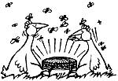
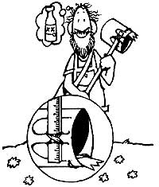

"I'll tell you about a little problem that's bugged me on occasion: windshield wipers that 'look OK' but don't clean the glass!" writes Joe Flenghi of Loleta, California. "Well, if the cause of that inconvenience is an uneven edge on one of your blades, simply remove the wiper-metal holder and all-and place both the glass-scraper and a sheet of 320 grit sandpaper on a flat surface. Then while grasping the wiper at its point of attachment, apply gentle downward pressure and stroke the piece back and forth across the sandpaper until the rubber edge looks straight. With any luck, the old windshield cleaner will work fine for another season!"
"Last spring, my neighbor's bees started buzzing all around our property," writes Rhonda Ingham of Rogers, Arkansas. "The pesky rascals soon became such a nuisance that my family hated to go outside. Then I remembered something my uncle had done when bees pestered his horses . . . so I rushed into the kitchen and came back out with a big pot and a large metal spoon. I began clanging away on my makeshift drum and-before long-all the bees swarmed together into one nearby tree! My neighbor came over, gathered up his neat little "pile" of bees, and took 'em home. So now he's got his insects back, and we're all enjoying his gift of some fresh honey.
"Mind you, I don't know why this bee-herding trick works . . . but it does!"
Most chicken farmers know that their biddies will lay more eggs if there's a light burning in the coop 24 hours a day, but when Francis Kosheleff-from the Santa Cruz Mountains of California-saw all the insects that were attracted to his birds' ceiling illuminator, he unhooked that light and installed a 40-watt bulb (protected by a globe fixture) in the hen pen's floor. The result? All the "flying protein" that dive bombs the bulb gets converted into eggs by Fran's hungry chickens!
Do you remember last spring (in MOTHER NO. 57, page 44) when Richard Maine suggested cutting the bottoms off of plastic milk jugs and using those containers as "mini-greenhouses" to help start your garden plants? Well, Edie Butters of Lincoln Center, Maine has gone Richard one step better. "Why collect a lot of otherwise useless no-bottomed jugs," asks Edie, "when you can protect your plants with canning jars . . . the very same containers you'll use to store the food come fall?!" Of course, you should prop such jars partly open on hot spring days . . . so the tender plants won't get scorched!
Ms. Butters also wants to remind readers that -no matter what form of mini-greenhouse you protect your seedlings with-you must be sure to "wean" the plants gradually by (at first) removing the covering containers for only short periods of time.
Oh, no! The youngster's got grit in an eye! Quick! Let's clean it out with cotton swabs, a washcloth, or-better yet-by putting the tot's head under a faucet and flushing the dickens out of that irritated orb!
Sound familiar? Well, Lance Eastman's mom taught him a superior eye-relieving method back when he was just a lad . . . a technique so safe, painless, and effective that the Vancouver, British Columbian now uses it on his own children: Simply tilt the patient's head back, "thumb" the eyelid out of the way, and then softly lick the irritating spot out with your tongue.
"One of homesteading's saddest-and most frustrating-moments," says Marge Parkhill .. . a Rochester, Washington rabbit raiser, "comes when an expectant doe finally gives birth to a long-awaited litter. . . but then turns around and eats some of her own newborns!" Fortunately, Marge knows how to prevent such a tragedy. "Each day-starting two or three days before the female is due (she'll start pulling some fur for nesting material about that time)-put a bit of bacon rind or hamburger meat in the rabbit's cage. If the doe needs any extra protein, she'll gobble up that meat ... and then leave her young'uns be."
"@#!%&*!" How's that again, if I may ask? "@#!&%!!!" Oh, having a few minor carpentry problems, eh? Perhaps you could use some DOWN-HOME NAIL LORE:
[1] Franklin R. Ecker knew that a waxed nail would penetrate wood more easily than an ungreased fastener, so - to be sure he has "lubricant" handy when he's on the job - the Las Vegas, Nevada resident drilled a hole in the butt end of his hammer and filled that opening with melted wax.
[2] When a just-hammered nail ends up poking halfway out the other side of your board, take the advice of Bridgeport, New York's Bruce Green: Bend that fastener's tip over before you flatten down the rest of the exposed spike. The bent point will then go back down into your plank . . . instead of resting, dangerously, along the back side of the board.
[3] Valdez, Alaska's J.D. Libbey knows how to get a tight, good-pulling hammer grip on a headless nail. Simply slip your tool in place-just as if the fastener did have a top-and bang the pounding surface of the spike grabber with another hammer .. . to wedge the nail into the base of the claw. Your puller will then have a two-pronged grasp, and you'll be able to pull that nail right out. v
[4] Erma Laux of Douglas, Arizona didn't mince words when she told us how you can drive a nail in plaster without cracking the brittle wall covering. "Just heat up the nail beforehand," she said.
[5] When A.J. White wants to drive a spike into an all-too-easy-to-split board, he drills a guide hole first. But, rather than hunt around for the right size drill bit to make this opening, the Manhattan Beach, Californian simply cuts the head off another nail (one that's the same size as his intended board fastener) and clamps that beheaded brad in his mechanical borer!
[6] Wally and Maggie Drew don't like to split lumber when they're hammering, either ... but-instead of predrilling their nail holes as A.J. does-the Janesville, Californians simply blunt the tip of their wood piercers before they hammer 'em in. Why? Because a sharp point pries wood fibers apart (an action which may cause a board to split) . . . but a dull nail tears its way right through a board.
Donna Hiemstra knows that a person has to pick an awful lot of dandelion flowers before she or he can brew up a batch of fine-tasting "spring" wine, so she's devised a brand-new hand tool . . . the Dandelion Picker. All it lakes to make this time- and back-saving device is a yardstick, a 4"-square piece of tin, some strong tape . . . and our old friend, the plastic milk jug.
To begin with, the Mendon, Michigan resident cuts the "head and shoulders" (but not the handle) off the jug. She then snips three V-slots in one side of the tin section and tapes that tooth-faced piece to the opening of the headless container (Donna cuts a few slits in the jug so she can wrap the tape around both the tin and the bottle). Lastly, Ms. Hiemstra tapes one end of the stick to the inside of the handle.
To use her clever implement, Donna simply slips a tin V just under the head of a dandelion flower and gives a slight tug. The yellow blossom snaps off cleanly and rolls right into the belly of the jug . . . and the busy forager heads off for her next easy pluckin's!
Some people can control their garden slug populations by simply handpicking the pests (or setting out a few bowls of beer for the slippery critters to drink . . . and drown in), but folks who face serious problems with the slimy crop raiders will be glad to learn the garden-protecting system invented by Diana Cohen's husband. Diana had to visit her growing plot at least six times a day to pick the greedy gastropods off the plants ... until her spouse encircled some "guinea pig" slugs in rings of various substances (such as oil, seaweed, and creosote) and discovered that petroleum jelly coated with salt was a champion slug stopper. The Lubec, Maine folks next surrounded the entire Cohen garden with old boards that were propped up with rocks and rested at 35-40° angles to the ground. They then covered the undersides of these planks-and their supporting stones-with the jelly/salt mixture.
Nary a slug has managed to crawl up and over the Cohen's undercoated barricade. And what's more, the sloping of those garden "walls" keeps the greasy deterrent from being washed off by summer rainstorms!
Anchorage, Alaska's William Sexauer knows what to do if you'd like to grow pumpkins but don't want the viney plants taking up a lot of your precious garden space . . . just plant the pumpkins in your corn rows!
OK. Now it's YOUR turn! We've all come up with some practical, down-home, time-tested solutions to the frustrating little problems that bug us every day. Let's hear YOUR best "horse sense"ideas so we can share 'em and all benefit.
Send your pointers to Down-Home Country Lore, P.O. Box 70, Hendersonville, North Carolina 28791, and I'll make sure that the most useful of the suggestions will appear in upcoming editions. A one-year subscription-or a one - year extension of an existing subscription-will then be sent to each contributor whose tip does get printed in this column.-MOTHER.
|
 |
 |
|